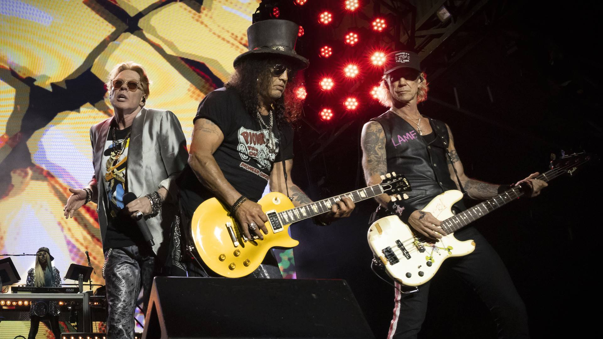

Guns N' Roses estreia músicas novas na abertura da turnê mundial

O primeiro show da turnê mundial 2026 do Guns N' Roses aconteceu em Monterrey, México, e trouxe uma surpresa: as faixas "Nothin'" e "Atlas" foram tocadas ao vivo pela primeira vez. Além disso, Dizzy Reed assumiu os teclados no lugar de Melissa Reese, que se afastou por motivos pessoais.
Leia mais